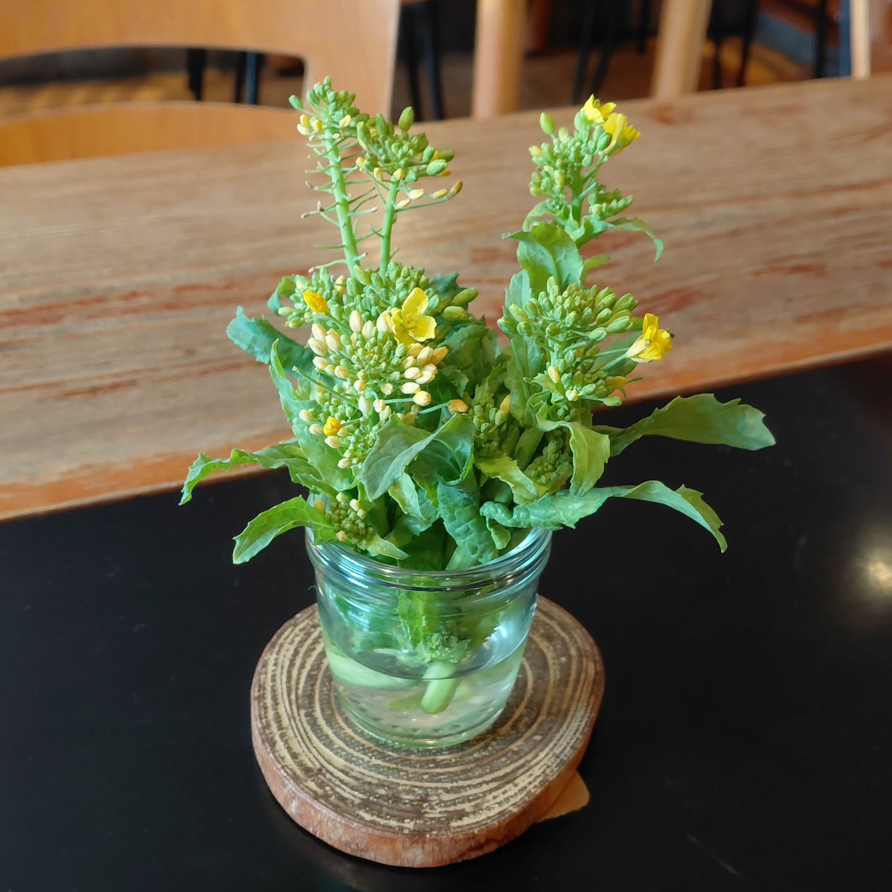
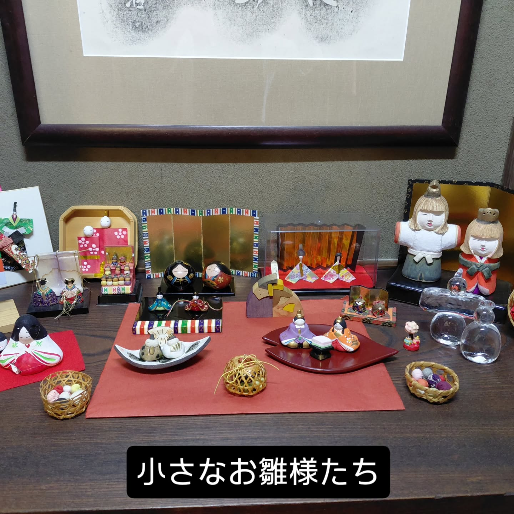
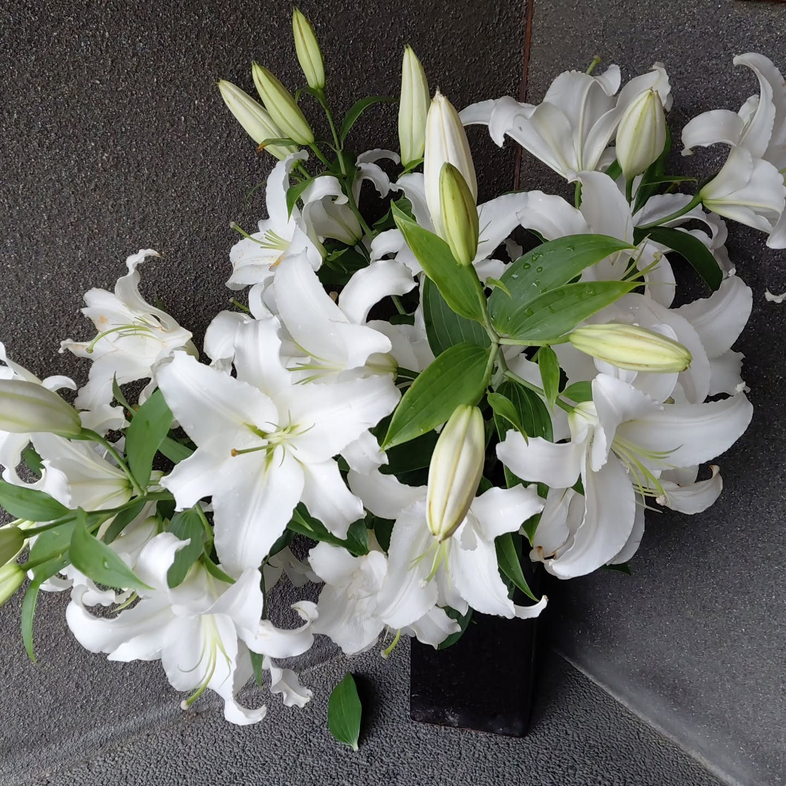
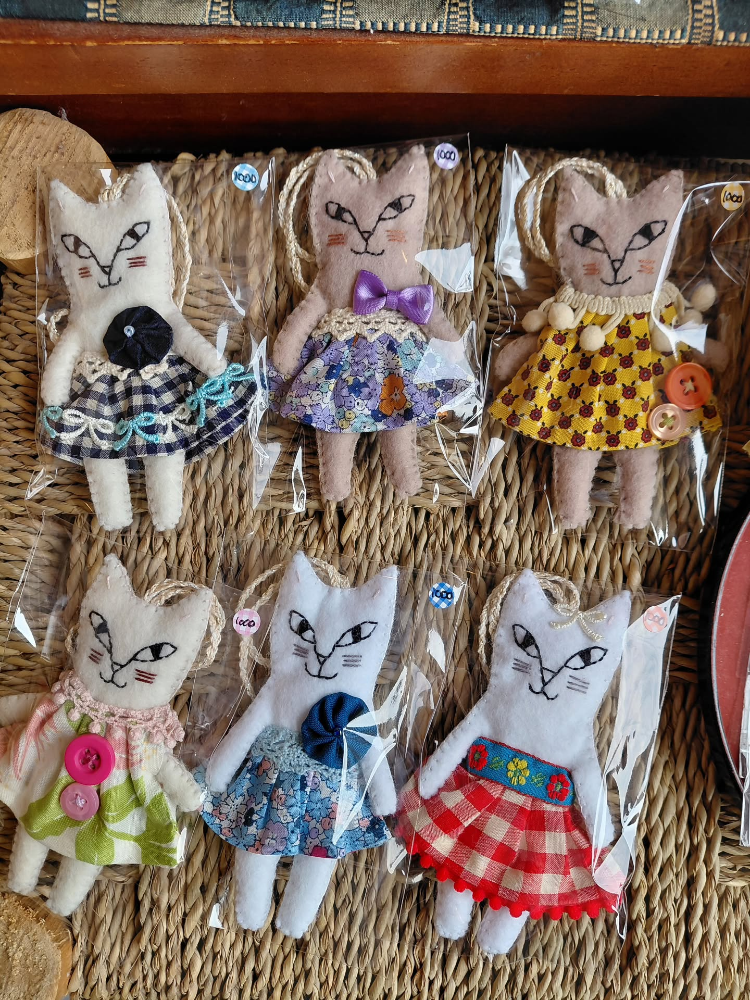
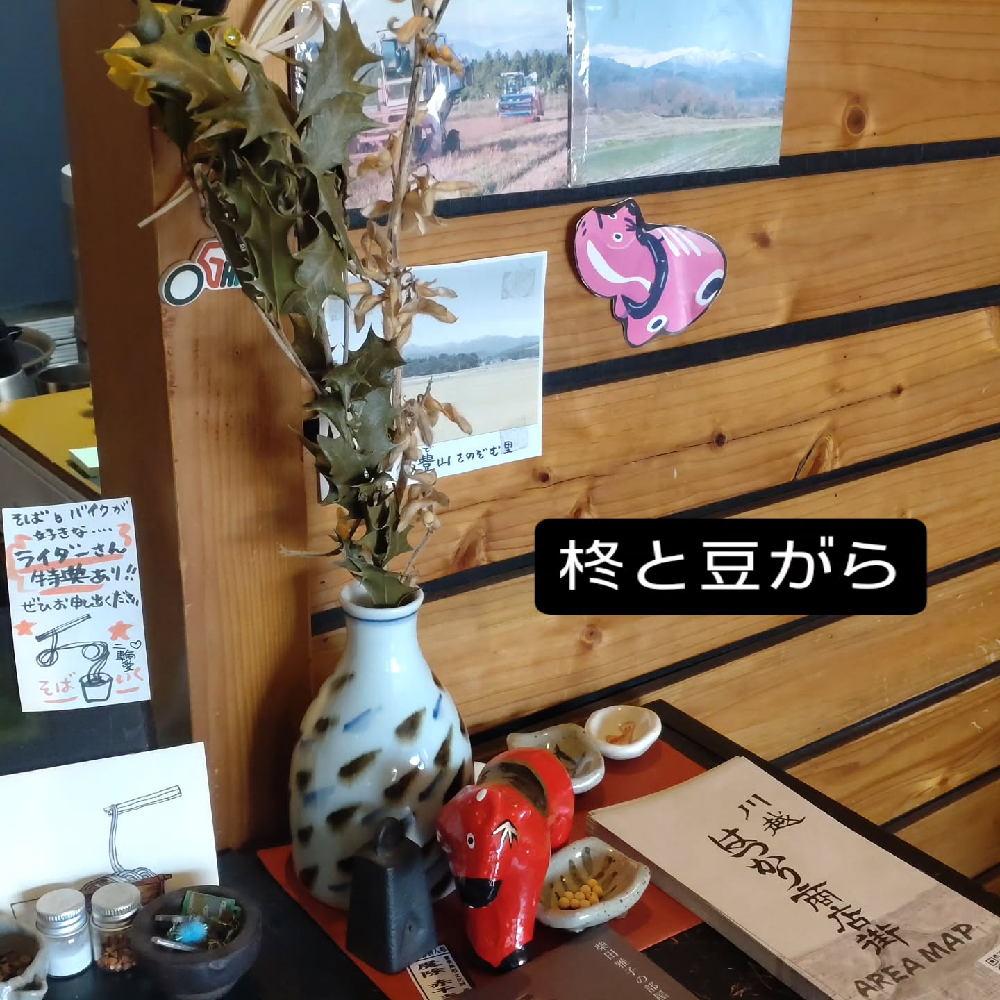

もりそば
会津のそば粉を、二八で手打ち。まずはそのままで、そばの風味を。800円。
TEUCHI SOBA HYAKUJO — MOTOMACHI, KAWAGOE
昭和五年の建物で、手打ちの二八そば。
川越市役所前、蔵造りの町並みのそば。
11:00〜18:30（L.O.18:00）｜木曜定休
ABOUT
川越市役所前の交差点、蔵造りの町並みのすぐそば。昭和五年（1930年）に建てられた木造三階建て——国の登録有形文化財（旧・湯宮釣具店）の建物です。
会津・山都町のそば粉を使い、二八そばを手で打っています。

SEASONS

ひな祭りには、小さなお雛様たちが店内に。

店内には、折々の花が生けられています。

お店のInstagramより。布姿の猫の人形たち。

節分のしつらえ。季節の室礼が続きます。
SHOP INFO
| 店名 | 手打そば 百丈（ひゃくじょう） |
|---|---|
| 住所 | 埼玉県川越市元町1-1-15 |
| アクセス | 川越市役所前の交差点。蔵造りの町並みのすぐそば |
| 営業時間 | 11:00〜18:30（ラストオーダー 18:00） |
| 定休日 | 木曜日 |
| 電話 | 049-226-2616 |
| 建物 | 1930年築・木造三階建て ※国の登録有形文化財（旧・湯宮釣具店） |